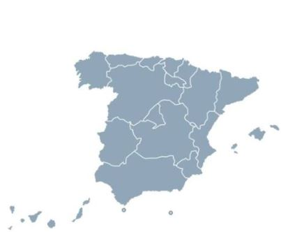
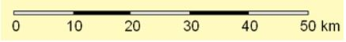
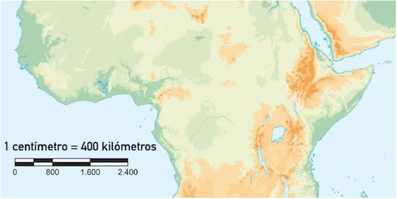
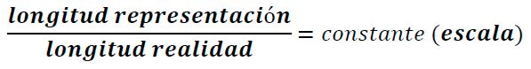
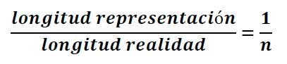
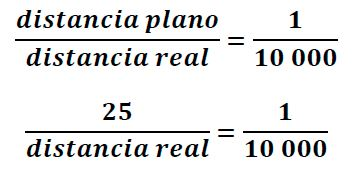
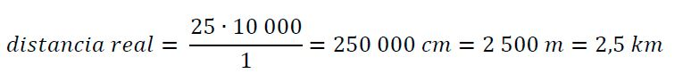

Uno de los ejemplos más habituales donde aplicamos la semejanza es en la interpretación y elaboración de mapas, planos y maquetas.
 |
 |
En cualquiera de estas representaciones, el objeto real y su representación deben ser semejantes, es decir, conservar la misma forma y mantener las mismas proporciones, aunque cambie el tamaño. Habitualmente, estas representaciones implican una reducción de la realidad para poder trabajar con ella de forma manejable.
Cuando una representación es semejante al objeto real, la relación entre cualquier medida del dibujo y su medida correspondiente en la realidad es siempre constante. A esa relación la llamamos escala.
La escala puede expresarse de dos maneras:
Escala numérica
Se representa mediante una razón del tipo 1 : n
donde n indica cuántas unidades en la realidad corresponden a una unidad en la representación.
Cuanto mayor es el valor de n, mayor es la reducción respecto a la realidad. Además:
- Escalas de hasta 1:10 000 suelen considerarse propias de planos.
- Para valores superiores, suelen utilizarse en mapas.
- Cuanto menor es n, mayor se considera la escala.
Escala gráfica
La escala también puede representarse mediante una línea graduada dividida en partes iguales.

En este caso, cada segmento indica la correspondencia entre una distancia en el dibujo y su medida real. Funciona como una especie de regla incorporada al propio plano o mapa, permitiendo medir directamente sobre la representación.
En muchas ocasiones aparecen combinadas escala numérica y escala gráfica, como sucede en algunos mapas.

Resolución de problemas con escalas
Para resolver problemas relacionados con escalas, se plantea una proporción entre la medida en el dibujo y la medida real:

A partir de esa relación, se despeja el valor desconocido.
Si lo que se quiere calcular es la escala en forma 1 : n, también se puede establecer una proporción:

Por ejemplo:
En un plano de una ciudad a escala 1: 10 000, la distancia entre dos colegios es de 25 cm. ¿Cuál es la distancia real entre ellos?

Despejando la distancia real entre los dos colegios:
